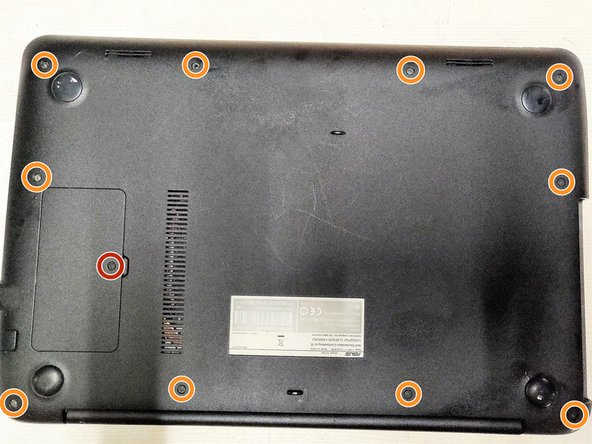
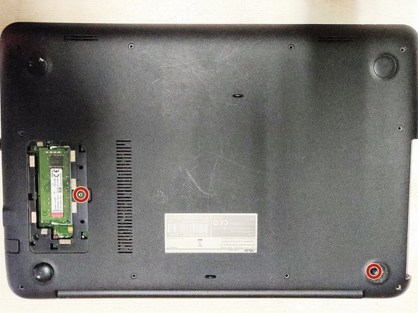
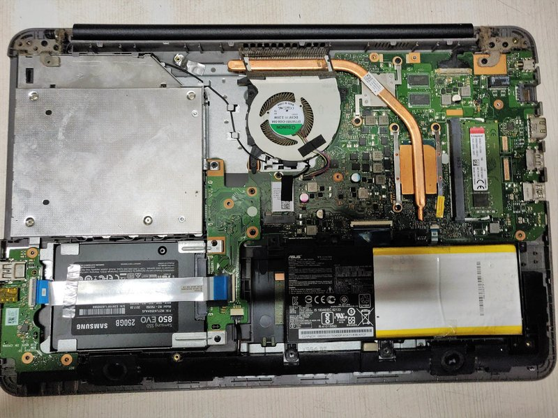
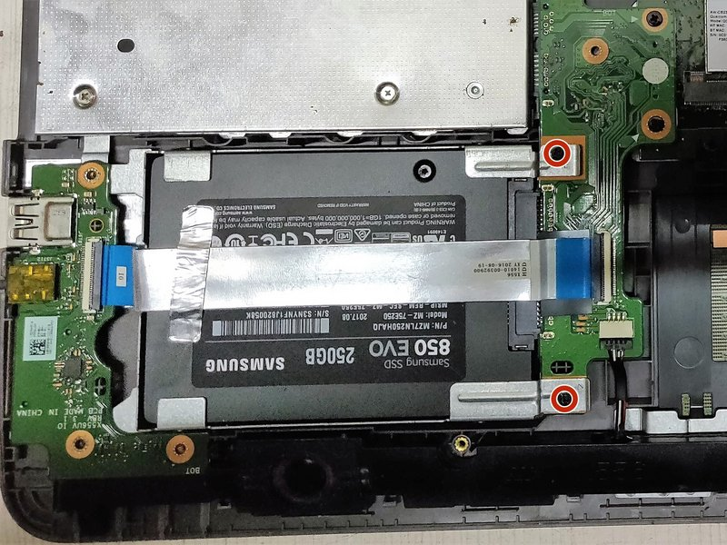
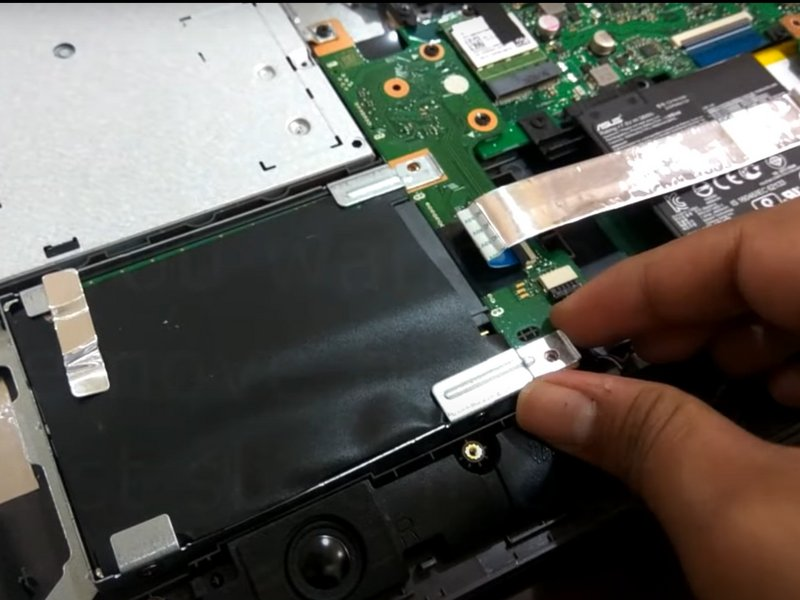

Asus HDD Repair Guide
Step 1 HDD (Hard Disk Drive)

- Using the Phillips #0 screwdriver, remove the single 5 mm screw and remove the RAM access panel.
- Remove the ten 5 mm screws using the same Phillips #0 screwdriver.
Step 2

- Remove two 2 mm hidden screws using the Phillips #0 screwdriver.
Step 3

- Remove the back cover of the laptop to expose the inner components.
Step 4

- Using the Phillips #0 screwdriver, remove the two 2 mm screws holding the HDD in place.
Step 5

- Gently take the left-side board containing the ports by simply sliding it in and taking it out while still connected to the wire.